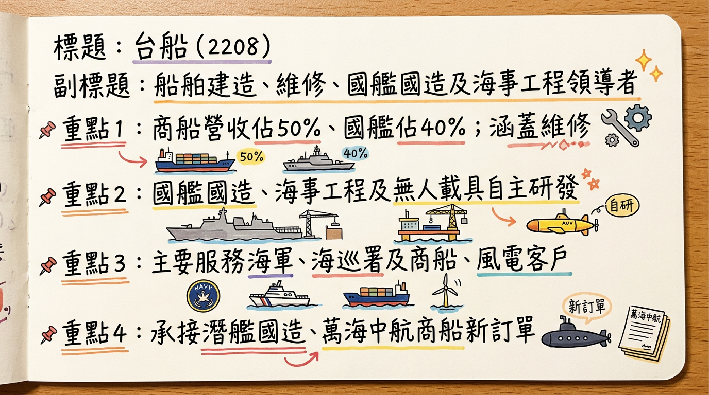
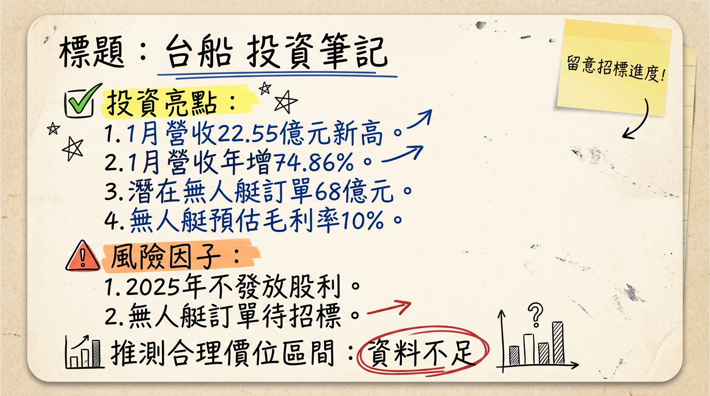

2208 台船 深度研究報告
一句話摘要
台船 (2208) 雖近年面臨虧損壓力，但在「國艦國造」、離岸風電海事工程及商船市場復甦三大引擎推動下，手握逾1,400億元在手訂單，能見度達2038年，公司管理層目標於2026年實現轉虧為盈，具備顯著的營運轉型與成長潛力。
公司概覽
台灣國際造船股份有限公司（台船，股票代碼：2208）是台灣最具規模的造船公司，業務範圍廣泛，涵蓋軍用、商用及離岸風電等多元領域。
業務、產品線與服務：
- 商用船舶建造：設計與建造各類貨櫃船、散裝貨輪、油輪、化學品船、海工船及鑽油平台。
- 國防及公務船舶建造：承接台灣海軍與海巡署的「國艦國造」專案，包括潛艦、巡防艦、巡護船、救難艦等，訂單能見度已達2038年。
- 船舶維修與改裝：提供各式船舶的維修、改裝及檢驗服務。
- 離岸風電海事工程：透過子公司台船環海風電工程公司，提供水下基礎、海上變電站運輸與安裝，以及相關鋼結構製造服務。擁有大型施工船「環海翡翠輪」，訂單已排至2027年。
- 無人載具研發：自主研發軍事用途無人船，如「奮進魔鬼魚」。
製造基地：
台船總部設於高雄，並在高雄和基隆設有主要造船廠。
- 高雄廠：船塢排程已滿至2030年，承接潛艦國造、商船及公務艦艇等大型專案。
- 基隆廠：船塢排程至2027年10月，已決定持續經營並引進新業務。
目前公開資料未提供各製造基地的具體營收貢獻比例。
所屬細分產業與相關題材：
- 細分產業：造船產業（商用與軍用）、海事工程與離岸風電產業、機械與維修產業。
- 相關題材：
*
國艦國造：受惠於政府國防自主政策，獲海軍與海巡署大額訂單。
* 離岸風電：積極參與離岸風電場建置，子公司台船環海獲利貢獻顯著。
* 無人載具：研發無人船，未來爭取軍方無人載具訂單。
* 商船市場復甦：受全球海運市場及船隊汰舊換新需求，獲得大量商船訂單。
* 軍工產業：台灣軍工產業鏈關鍵一環，受惠國防預算增加。
營收結構（依據在手訂單與預估）：
| 業務類別 | 在手訂單初期餘額 (2025年初) 佔比 | 預計整體在手訂單餘額增至850億元後佔比 | 2025-2026 年度營收預估佔比 |
|---|
| 國艦國造 | 63% | 30% | 40% |
| 石化相關業務 | 24% | 10% | N/A |
| 商船 | 13% | 60% | 50% |
| 其他業務 | N/A | N/A | 10% |
| 總計 | 100% | 100% | 100% |
核心競爭優勢
國艦國造獨佔優勢：作為台灣唯一具備潛艦、大型軍艦與海巡艦艇建造能力的船廠，獨家承接台灣政府的「國艦國造」重大專案，訂單能見度高達2038年，提供穩定且高戰略價值的營收來源。
離岸風電海事工程領導者：透過子公司台船環海，擁有國內唯一的大型浮吊船「環海翡翠輪」，並成功完成多項大型離岸風電專案，在台灣離岸風電建置領域居於領先地位，訂單已排至2027年，每年可貢獻母公司逾9億元獲利。
先進技術研發能力：積極投入數位轉型、智慧船舶與無人載具研發，如自主研發的「奮進魔鬼魚」無人船已獲原則性設計認可，展現其在高附加價值船舶製造及未來科技應用上的潛力。
龐大在手訂單支撐：目前手持逾1,400億元待執行訂單，提供未來數年穩定的營收基礎，特別是商船訂單自2026年起進入大量交船期，預計每年貢獻至少80億元營收。
財務分析
月營收趨勢
| 月份 | 金額 (億元) | 月增率 (MoM) | 年增率 (YoY) |
|---|
| 2026年1月 | 22.55 | 32.28% | 74.85% |
| 2025年12月 | 17.04 | 61.72% | 71.53% |
| 2025年11月 | 10.54 | -2.49% | -25.85% |
| 2025年10月 | 10.81 | -28.47% | 29.21% |
| 2025年9月 | 15.11 | 11.83% | 61.79% |
| 2025年8月 | 13.51 | 8.86% | 10.63% |
| 2025年2月 | 8.41 | -34.77% | -25.07% |
季度數據 (2024Q4 - 2025Q3)
| 季度 | 營收 (億元) | 毛利率 | 營業利益率 | EPS (元) |
|---|
| 2208Q4 | N/A | -41.12% | -47.81% | N/A |
| 2209Q1 | N/A | -28.76% | -32.15% | N/A |
| 2209Q2 | N/A | -14.75% | -17.12% | N/A |
| 2209Q3 | N/A | -2.02% | -6.83% | 0.04 |
年度趨勢
| 年度 | 營收 (億元) | 年增率 (YoY) | EPS (元) | 稅前虧損 (億元) |
|---|
| 2024年 (實際) | 144.94 | N/A | -2.2 | 27.83 |
| 2025年 (預估/實際) | 217.8 | 50.27% | -1.94 (3Q累計) | 22.55 (稅前) |
法說會重點 (2026年2月初記者會)
台船董事長陳政宏於2026年2月初的記者會，對外說明營運前景，重點如下：
- 轉虧為盈目標：公司目標在2026年確定轉虧為盈，終結連續四年虧損。
- 商船業務：預計自2026年起進入大量交船期，每年營收認列至少約80億元。
- 國造潛艦：IDS（原型艦）後續艦的第一張訂單已正式啟動，未來將依工程進度比例認列營收，工作排程延伸至2038年。
- 無人艇業務：海軍規劃於2026年底釋出1,320艘自殺無人艇訂單，總預算180億元。台船將結合業界提供年產500艘能量，若順利取得，可望獲得68億元建造款項，預估有一成毛利率。招標程序預計於2027年啟動。
- 海巡艦艇：將爭取海巡署2026年啟動的「海域維權海巡艦艇建造計劃」，共計40艘大小型巡防船艦，逾600億元大單，預計建造期程為2026年至2033年。
- 在手訂單：目前在手訂單合約金額逾2,000億元，尚待執行金額近1,400億元，造船訂單已排到2030年。
- 環海風電工程：子公司台船環海在2026年及2027年訂單已全滿，並已開始爭取新年度訂單。
券商觀點
券商目標價與評等
| 券商名稱 | 目標價 (新台幣) | 評等 | 日期 |
|---|
| N/A | 未找到 | N/A | N/A |
| N/A | 未找到 | N/A | N/A |
| N/A | 未找到 | N/A | N/A |
財報深度分析
利潤率趨勢
| 項目 | 2024Q4 | 2025Q1 | 2025Q2 | 2025Q3 | 2025年累計 (前11月) |
|---|
| 毛利率 | -41.12% | -28.76% | -14.75% | -2.02% | N/A |
| 營業利益率 | -47.81% | -32.15% | -17.12% | -6.83% | N/A |
| 稅後淨利率 | -46.87% | -21.27% | -17.11% | 1.29% | N/A |
| 每股稅後盈餘 (EPS) | N/A | N/A | N/A | 0.04 元 | 0.17 元 (年度累計) |
台船近年毛利率與營業利益率持續為負，顯示其營運面臨嚴峻挑戰，主要原因包括：
- 高建造複雜度與缺乏學習曲線：承接如潛艦國造、新型救難艦等高複雜度且為首艘艦艇的專案，缺乏規模經濟與學習曲線效應，導致成本高昂。
- 成本結構壓力：國內造船供應鏈不完善，許多關鍵設備需向國外採購，增加建造成本，影響毛利率。
- 業外收益挹注：2025年第三季稅後淨利率轉正，及11月連續五個月獲利，主要受惠於海工與修船工程結算優於預期，以及新台幣兌美元貶值帶來的匯兌利益回沖。這表明營運核心仍待改善，但業外挹注有助於虧損收斂。
存貨分析
目前未找到近4季的存貨金額與存貨週轉天數趨勢的具體數據。也未有資料說明存貨有異常堆積或備料現象。
資本支出
目前未找到近3年具體的資本支出金額與趨勢數據。
未來資本支出計畫與預計新增產能：
- 台船高雄廠船塢排程已滿至2030年，基隆廠至2027年10月，顯示產能利用率高。
- 無人船生產線已備妥，平均7-10天可交付一艘，並可配合合約量擴大產線，目標年產500艘。
- 透過高科技廠房擴建、模組化建造及自動化設備布局，持續提升建造效率與高附加價值船艦產能。
股權異動
- 董監事/大股東申報轉讓紀錄：未找到2024年以後的近期資料。
- 庫藏股買回紀錄：未找到2024年以後的紀錄。
- 可轉換公司債（CB）發行：未找到2024年以後的發行資訊。
- 現金增資或減資計畫：未找到2024年以後的計畫。
- 股利政策：由於公司近年持續虧損，2026年3月9日董事會決議2025年度不發放股利。
產業分析
市場規模與供需狀況
全球造船市場規模在2025年預估為454.1億美元，預計2026年將達479.1億美元，並以5.5% CAGR成長至2035年的775.7億美元。另一報告指出，2024年市場規模為1564.7億美元，預計2033年達2037.6億美元，CAGR 2.93%。儘管數據略有差異，但均顯示產業持續成長。
供需狀況：
- 2024年：全球航運市場因地緣政治（俄烏衝突、紅海危機）及運河乾旱等因素，運價維持高位，帶動新船訂單量創近年新高。全球活躍船廠數量較2008年高峰減少逾60%，行業呈現賣方市場。
- 2025-2026年展望：全球船隊運力增長速度可能超過海運貿易量，航運市場或面臨壓力。然而，綠色更替需求、海軍現代化、以及地緣政治不確定性仍將驅動新船訂造需求與價格。
競爭格局
全球主要造船國家市佔率 (以修正總噸計)：
| 國家 | 2025年12月全球新船訂單佔比 | 截至2026年1月9日全球手持訂單佔比 |
|---|
| 中國 | 68.59% | 64.02% |
| 韓國 | 19.52% | 20.70% |
| 日本 | 1.75% | 7.71% |
| 特性 | 台船 (2208) | 全球主要競爭者 (中、韓大廠) |
|---|
| 技術 | 具高附加價值、環保節能、智慧船舶與無人載具研發能力。如：自主研發「奮進魔鬼魚」無人船，環海翡翠輪。 | 掌握高端LNG船、油輪等技術，積極投入智慧造船與綠色技術研發，但規模更大。 |
| 產能 | 高雄廠排至2030，基隆廠排至2027。產能相對有限，但專注高階訂單。 | 擁有龐大產能，中國船企尤其以量大、價優佔據主導地位。 |
| 客戶 | 台灣海軍、海巡署（國艦國造），萬海、中航等商業航運公司。 | 全球商業航運巨頭，各國海軍等。 |
| 價格 | 在國艦國造領域具獨佔性，商船領域面對國際市場價格競爭。 | 中國船企具價格優勢；韓國船企在液化氣船等高技術船型具優勢。 |
| 市佔率 | 在全球市場佔比極低，但在台灣國艦國造市場獨佔。 | 中國（約70%）、韓國（約16.5%）主導全球新船訂單市場。 |
台船在台灣造船業居龍頭地位，承擔多項國艦國造專案，在國內幾乎沒有規模相當的直接競爭對手。中信造船主要在公務船和小型艦艇領域有所參與。
產業趨勢
綠色船舶與脫碳化技術
* 趨勢：IMO嚴格環保法規與全球碳中和目標，推動替代燃料船舶（LNG、甲醇、氨燃料）需求。2024年新船訂單中，替代燃料環保船舶佔比高達50.1%。
* 影響：促使船廠投入研發，提升技術能力以滿足節能、環保、數位化船舶需求。
* 對台船：
* 機會：積極投入LNG、甲醇、氨燃料等替代燃料船舶開發，符合國際趨勢，有望提升競爭力。
* 威脅：需持續投入高額研發，若技術進度不如預期，可能影響競爭力。
智慧船舶與數位化
* 趨勢：AI輔助設計、3D建模、智慧導航、自動化作業、遠端監控等技術應用於造船與運營。
* 影響：提高船舶運營效率，減少人力成本，提升安全性。
* 對台船：
* 機會：台船積極推動數位轉型與智慧船舶研發，可提升建造效率與運營服務。
* 威脅：技術投入與人才需求高，需確保技術領先性。
無人載具（無人船）的發展
* 趨勢：地緣政治緊張推動軍事無人船需求爆發，商業應用亦在發展中。
* 影響：改變海上作業模式，軍用領域發展尤為迅速。
* 對台船：
* 機會：台船已自主研發無人船「奮進魔鬼魚」並獲設計認可，有望爭取海軍龐大的無人艇訂單（海軍規劃採購1,320艘，預算180億元），成為軍工領域新成長點。
* 威脅：技術競爭者眾多，需確保技術優勢與量產能力。
相關投資題材的具體連結：
- AI 與無人載具：台船研發的無人船結合AI技術應用於國防，具備軍工與高科技屬性。
- 綠色能源/離岸風電：透過台船環海積極參與離岸風電，直接受惠於再生能源發展，並投入環保船舶開發。
- 國防工業：「國艦國造」為台船重要業務，直接連結國防工業，受惠於國防預算與政策支持。
近期催化劑
利多事件：
- 2026年2月初：董事長陳政宏表示，國造潛艦IDS後續艦第一張訂單已啟動，排程至2038年，提供長期穩定營收。
- 2026年2月上旬：首次展示兩款無人船模型，海軍規劃採購1,320艘自殺無人艇（預算180億元），台船積極爭取，若獲500艘訂單，可望獲68億元建造款項。
- 2026年1月：合併營收達22.55億元，月增32.29%、年增74.86%，創近8個月新高，顯示營運回溫。
- 2025年12月：合併營收17.04億元，年增72%、月增62%。
- 2025年1月13日：台船環海與CIP簽訂渢妙一期風場新的海事工程合約，確保離岸風電業務持續成長。
- 台船環海獲利貢獻：子公司台船環海2024、2025年獲利亮眼，預計每年可貢獻母公司台船逾9億元獲利，且海事工程訂單已滿檔至2027年。
- 商船大單：與萬海、中航簽訂合計20艘商船訂單，總金額高達755億元，預計2026年第二季開工，商船營收貢獻預估至少80億元/年。
利空事件：
- 2026年3月9日：董事會決議2025年度不發放股利，反映公司持續虧損。
- 海鯤號進度延遲：「海鯤號」潛艦預計2026年6月底前交付海軍，因延遲交付可能產生約3,800多萬元逾期罰款，已於2026年1月提列損失。
- 2025年2月：合併營收8.41億元，月減34.77%、年減25.07%，顯示營收波動性。
- 營運虧損：2024年自結稅前虧損約27.83億元，2025年全年預計稅前虧損逾22億元，公司仍處於轉型期的虧損狀態。
⭐ 成長動能時間軸
| 時間點 | 成長動能 / 事件 | 具體內容 | 預計影響與量化 |
|---|
| 2025年3月 | 台船環海完成中能風場水下基礎安裝 | 完成31座水下基礎安裝 | 貢獻營收與獲利 |
| 2025年8月 | 台船環海提前完成海龍風場水下基礎安裝 | 完成73座套管式水下基礎安裝 | 貢獻營收與獲利 |
| 2025年9月 | 無人載具研發獲設計認可 | 自主研發無人船「奮進魔鬼魚」獲美國驗船協會原則性設計認可 | 奠定爭取訂單基礎 |
| 2025年10月 | 新型救難艦「大武軍艦」交付海軍 | 交付海軍 | 營收認列完成 |
| 2026年Q1 | 台船環海渢妙一期風場工程動工 | 與CIP簽約，啟動新海事工程 | 貢獻營收與獲利 |
| 2026年Q2 | 商船大單開工 | 與萬海、中航簽訂合計20艘商船訂單，總金額755億元，陸續開工 | 營收顯著成長，預計每年貢獻至少80億元營收 |
| 2026年中 | 潛艦國造原型艦「海鯤號」交付海軍 | 預計6月底前交付海軍 | 標誌性里程碑，若順利可加速後續艦排程 |
| 2026年底 | 無人艇訂單釋出 | 海軍計畫釋出1,320艘無人自殺艇訂單，總預算180億元 | 潛在68億元訂單，毛利率約10% |
| 2026年起 | 國艦國造IDS後續艦訂單啟動 | IDS後續艦第一張訂單已啟動 | 長期穩定營收至2038年之後 |
| 2026年起 | 海巡艦艇建造計劃啟動 | 海巡署啟動「海域維權海巡艦艇建造計劃」，共40艘，逾600億元 | 潛在每年挹注營收70億元至80億元至2033年 |
| 2026年起 | 營運目標轉虧為盈 | 管理層預期2026年可實現損益兩平並轉虧為盈 | 提升公司估值與市場信心 |
| 2026-2027年 | 台船環海訂單滿載 | 離岸風電海事工程訂單已全滿 | 持續穩定貢獻母公司獲利逾9億元/年 |
| 2027年起 | 無人艇招標程序啟動 | 海軍訂單啟動招標，台船具年產500艘能量 | 新業務模式落地，營收新增動能 |
| 2030年 | 高雄廠船塢排程滿檔；商船訂單能見度 | 高雄廠排程至2030年，商船訂單能見度至2030年 | 確保長期產能利用率與營收可預期性 |
| 2031年 | 高緯度遠洋巡護船全案完成 | 第三艘已開工，全案預計完成 | 階段性營收認列結束 |
| 2034年 | 海軍、海巡公務艦艇排程 | 塢期已排至2034年 | 長期營收動能 |
2026 展望
成長動能：
- 營運轉盈目標：管理層明確提出2026年將轉虧為盈，此為重要的里程碑，有望大幅提升市場信心。
- 商船業務高峰：隨著與萬海、中航簽訂的755億元商船訂單於2026年進入大量交船期，預計每年貢獻至少80億元營收，將成為營收成長的主要推力。
- 國艦國造穩定貢獻：IDS後續艦訂單已啟動，確保營收能見度至2038年。同時，海巡署600億元海巡艦艇大單亦將於2026年啟動，為台船帶來長期穩定收益。
- 無人載具新藍海：海軍規劃180億元無人艇訂單，台船具備研發與年產500艘的潛力，若能成功爭取訂單，將開啟全新的成長空間。
- 離岸風電獲利強勁：子公司台船環海訂單已滿至2027年，每年穩定貢獻母公司逾9億元獲利，為虧損收斂提供堅實基礎。
- 龐大在手訂單：目前待執行訂單近1,400億元，若以2030年為截止點計算，未來4.5年平均年營業額可達約280億元，營收成長可期。
風險：
- 國防政策不確定性：政府國防預算或政策調整可能影響訂單規模與進度，需密切關注政局變化。
- 專案執行風險：造船專案具高度複雜性，工程延宕、驗收不順或客戶要求變更，可能導致營收遞延或成本超支。
- 成本與獲利壓力：原物料價格波動、工資上漲及匯率變動可能侵蝕毛利率，若未能有效轉嫁成本或優化合約條件，可能出現「有量無利」情況。
- 海鯤號進度延宕：潛艦原型艦「海鯤號」的調校困難可能導致進度延遲，影響交付時間和公司聲譽，並可能產生罰款。
- 地緣政治與貿易政策：全球地緣政治緊張、國際油價波動及貿易保護主義，可能影響全球航運需求與新船訂單。
投資結論
台船 (2208) 正處於營運轉型的關鍵時刻，儘管過去數年飽受虧損之苦，但強勁的訂單能見度與多方成長動能預示著未來前景光明。
營運轉盈展望明確，投資價值浮現：管理層公開宣示2026年將轉虧為盈，這不僅是財報上的數字變化，更是公司結構性改革與訂單效益顯現的標誌。對於一家從虧損泥沼中走出的公司，轉盈本身就是最大的利多催化劑，有望帶動估值重估。
三大業務引擎提供堅實成長基礎：「國艦國造」（訂單至2038年）、商船建造（每年至少80億元營收貢獻）及離岸風電海事工程（台船環海每年貢獻逾9億元獲利且訂單滿至2027年）構成穩固的營收與獲利支柱。加上潛在的180億元無人艇訂單，營收爆發力強勁。
高額在手訂單提供長期能見度：高達近1,400億元的待執行訂單，確保了未來數年甚至十餘年的營收基礎，且大部分訂單為高戰略價值的國艦國造與高附加價值的商船及風電工程，提供了高度的營運可預測性。
軍工與綠能雙重題材加持：作為台灣國防自主與綠色能源政策的關鍵執行者，台船同時受惠於軍工概念股和離岸風電概念股的雙重加持，特別是在地緣政治風險升溫和全球能源轉型的背景下，其戰略地位日益重要。
技術研發與產能優化持續進行：積極發展無人船、智慧船舶技術，並透過產能排程與模組化建造提升效率，雖短期資本支出與學習曲線壓力仍存，但長期有助於提升競爭力與盈利能力。
目標價區間建議：
考量到台船在2026年轉虧為盈的明確目標、龐大的在手訂單、獨特的國艦國造與離岸風電業務帶來的戰略價值及壟斷性，儘管過往虧損，但其未來成長潛力顯著。預計在2026年實現盈利後，若能保持穩定的獲利能力，市場將給予更高的估值。
我們建議未來12-18個月的目標價區間為 新台幣 30-40 元。此區間反映了公司轉型的成功預期、長期訂單的營收貢獻，以及在軍工與綠能產業中的戰略地位所帶來的估值溢價。投資人應密切關注公司每月營收表現及各項重大專案的交付進度，以驗證其轉盈進程。
本報告由 AI 自動產生，資料來源為公開網路資訊，僅供參考，不構成投資建議。產生時間：2026-03-09 22:06
📊 資訊卡

